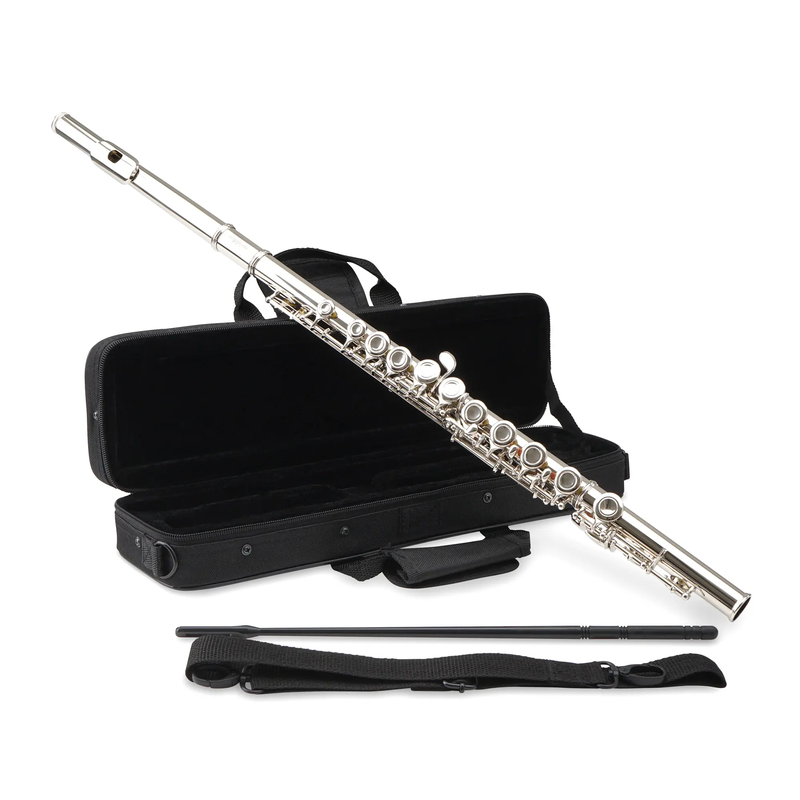
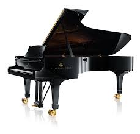

La música es un arte que utiliza sonidos organizados en el tiempo para expresar ideas, emociones y sensaciones. Puede involucrar melodía, ritmo, armonía y timbre, entre otros elementos. La música es una forma de comunicación muy poderosa que se encuentra presente en todas las culturas y sociedades humanas, y puede tener una amplia gama de propósitos, desde el entretenimiento hasta la expresión artística, la celebración cultural, la religión, la terapia y más.
La música es un arte que utiliza sonidos organizados en el tiempo para expresar ideas, emociones y sensaciones. Puede involucrar melodía, ritmo, armonía y timbre, entre otros elementos. La música es una forma de comunicación muy poderosa que se encuentra presente en todas las culturas y sociedades humanas, y puede tener una amplia gama de propósitos, desde el entretenimiento hasta la expresión artística, la celebración cultural, la religión, la terapia y más.
La flauta transversal, también conocida como flauta travesera, es un instrumento de viento-madera con una larga historia que se remonta a la antigüedad. Desarrollada en Europa en el siglo XVIII, la flauta moderna está hecha principalmente de metal y consta de tres partes: la cabeza, el cuerpo y la pata. Para tocarla, el músico sostiene el instrumento horizontalmente y sopla aire a través de la embocadura mientras manipula los agujeros y llaves con los dedos para producir notas. Es un instrumento versátil utilizado en una amplia gama de géneros musicales, con un repertorio que abarca desde música clásica hasta jazz y música popular. Grandes flautistas como Jean-Pierre Rampal y Sir James Galway han contribuido al desarrollo y la popularidad de la flauta travesera.
El piano es un instrumento musical de teclado y cuerdas percutidas inventado en el siglo XVIII por Bartolomeo Cristofori en Italia. Consta de un teclado de 88 teclas y su técnica de ejecución implica el uso de ambas manos para tocar notas altas y bajas simultáneamente. Su repertorio abarca desde obras clásicas hasta música popular en una amplia variedad de estilos. El piano ha sido fundamental en la música occidental y ha sido tocado por muchos pianistas y compositores destacados a lo largo de la historia.
La historia de la música es el estudio de las diferentes tradiciones en la música y su orden en el planeta a lo largo del tiempo. Ya que en toda cultura conocida hubo alguna forma de manifestación musical, la historia de la música abarca todas las sociedades y épocas. No se limita, como es habitual en algunos ámbitos académicos, a Occidente, sin embargo a menudo se utiliza la expresión «historia de la música» para referir exclusivamente a la historia de la música europea y su evolución en el mundo occidental. La música de una determinada sociedad está estrechamente relacionada con otros aspectos de su cultura, como su organización económica, su desarrollo tecnológico, tradiciones, creencias religiosas, etc.
Regreso